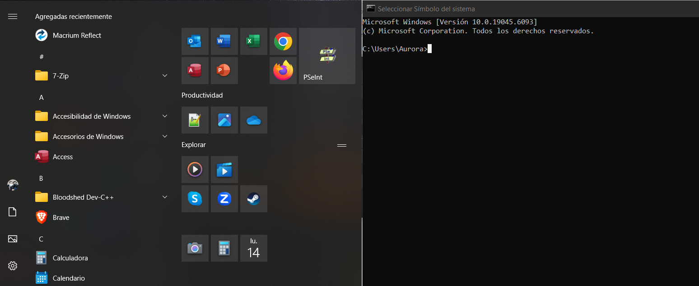

C:\Users\Docente>
Terminal de Comandos (CMD)
Informática Aplicada I
Undécimo A
Docente: Pablo Antonio Peña
San Pedro Sula
20 de julio del 2025
_
C:\IMA\IIBTP\Informatica\CLI.
¿Qué es la Línea de Comandos (CLI)?
La CLI (Command Line Interface) es un método de interacción con tu computadora mediante comandos de texto. A diferencia de la interfaz gráfica (GUI) que usas con ventanas e iconos, en la CLI escribes instrucciones directas.
Ventajas de la CLI:
- Control Preciso: Permite realizar tareas muy específicas y potentes.
- Automatización: Ideal para escribir scripts que realicen tareas repetitivas.
- Eficiencia: Para usuarios avanzados, es más rápido que navegar con el ratón.

_
C:\IMA\IIBTP\Informatica\NAV_BASIC.
Comandos Básicos de Navegación
Estos comandos te permiten moverte entre las carpetas (directorios) de tu sistema de archivos.
cd (Change Directory): Este comando es fundamental para cambiar el directorio actual en el que te encuentras en la terminal.pwd (Print Working Directory) / Mostrar Ruta: Muestra la ruta completa (absoluta) del directorio actual. En Windows CMD, la ruta ya se ve en el prompt.
_
C:\IMA\IIBTP\Informatica\NAV_BASIC_EJEMPLOS.
Ejemplos: Comandos de Navegación
C:\Users\Docente>cd Documentos
// Cambia al directorio 'Documentos' dentro de la carpeta actual.
C:\Users\Docente\Documentos>cd ..
// Sube un nivel al directorio padre (en este caso, 'Docente').
C:\Users\Docente>cd C:\Windows\System32
// Va directamente a la ruta especificada.
C:\Users\Docente>pwd // (Linux/macOS) Muestra la ruta completa actual.
_
C:\IMA\IIBTP\Informatica\FILE_DIR_1.
Gestión de Archivos y Directorios (Parte 1)
Aprende a listar el contenido de las carpetas y a crear o eliminar directorios.
dir (Windows) / ls (Linux): Ambos comandos se utilizan para listar el contenido de un directorio.mkdir (Make Directory): Se usa para crear uno o más directorios nuevos (carpetas).rmdir (Remove Directory): Se utiliza para eliminar directorios existentes. En Windows, rmdir solo elimina directorios vacíos.
_
C:\IMA\IIBTP\Informatica\FILE_DIR_1_EJEMPLOS.
Ejemplos: Gestión de Archivos (Parte 1)
C:\Users\Docente>dir
// Muestra una lista de archivos y subcarpetas en el directorio actual.
C:\Users\Docente>mkdir NuevaCarpeta
// Crea una nueva carpeta llamada 'NuevaCarpeta'.
C:\Users\Docente>rmdir CarpetaVacia
// Elimina la carpeta 'CarpetaVacia' si está vacía.
C:\Users\Docente>rd /s /q MiCarpeta
// (Windows) Elimina 'MiCarpeta' y todo su contenido sin confirmación.
_
C:\IMA\IIBTP\Informatica\FILE_DIR_2.
Gestión de Archivos y Directorios (Parte 2)
Aprende a copiar, mover, renombrar y eliminar archivos.
copy (Windows) / cp (Linux): Ambos comandos sirven para copiar archivos de una ubicación a otra.move (Windows) / mv (Linux): Estos comandos se usan para mover archivos o directorios, o para renombrarlos.del (Windows) / rm (Linux): Ambos comandos se utilizan para eliminar archivos. ¡Cuidado, no van a la Papelera de Reciclaje!
_
C:\IMA\IIBTP\Informatica\FILE_DIR_2_EJEMPLOS.
Ejemplos: Gestión de Archivos (Parte 2)
C:\Users\Docente>copy archivo.txt C:\Documentos\destino\
// Copia 'archivo.txt' a la carpeta 'destino'.
C:\Users\Docente>move viejo.txt nuevo.txt
// Renombra 'viejo.txt' a 'nuevo.txt'.
C:\Users\Docente>del informe.log
// Elimina el archivo 'informe.log'.
C:\Users\Docente>rm -r ProyectoLinux/
// (Linux) Elimina el directorio 'ProyectoLinux' y su contenido.
_
C:\IMA\IIBTP\Informatica\ADD_CMDS.
Comandos Adicionales Útiles
Estos comandos te ayudarán en tu día a día con la terminal.
type (Windows) / cat (Linux): Muestra el contenido de un archivo de texto directamente en la terminal.help (Windows) / man (Linux): Muestra la ayuda y opciones de un comando.cls (Windows) / clear (Linux): Limpia la pantalla de la terminal, dejando un espacio de trabajo ordenado.
_
C:\IMA\IIBTP\Informatica\ADD_CMDS_EJEMPLOS.
Ejemplos: Comandos Adicionales
C:\Users\Docente>type mi_informe.txt
// Muestra el contenido del archivo 'mi_informe.txt'.
C:\Users\Docente>help dir
// Muestra información detallada sobre el comando 'dir'.
C:\Users\Docente>cls
// Limpia toda la pantalla de la terminal.
_
C:\IMA\IIBTP\Informatica\SHELL_SCRIPT.
Introducción a Shell Scripting
El Shell Scripting es la capacidad de escribir secuencias de comandos (scripts) para automatizar tareas repetitivas en la terminal. Un script es un archivo de texto con una serie de comandos que se ejecutan en orden.
¿Por qué es útil?
- Automatización: Realiza tareas tediosas sin intervención manual.
- Eficiencia: Ejecuta múltiples comandos rápidamente.
- Consistencia: Asegura que las tareas se hagan siempre igual.
Ejemplo de script simple para Windows (.bat):
Este script crea una carpeta y mueve todos los archivos de texto (.txt) a ella.
@echo off
REM Desactiva la visualización de los comandos.
echo Organizando archivos...
REM Muestra un mensaje.
mkdir DocumentosOrganizados >nul 2>&1
REM Crea 'DocumentosOrganizados'. (>nul 2>&1 evita mensajes si ya existe)
move *.txt DocumentosOrganizados >nul 2>&1
REM Mueve todos los archivos .txt al nuevo directorio.
echo Archivos .txt movidos.
REM Muestra un mensaje de confirmación.
pause
REM Pausa la ejecución hasta que se presione una tecla.
_
C:\IMA\IIBTP\Informatica\EX1_ORG.
Ejercicio Práctico 1: Organización de Archivos
Objetivo: Automatizar la organización de archivos por tipo.
Crea un script (ej. organizar.bat) que:
- Cree una carpeta llamada
Reportes_Diarios si no existe.
- Mueva todos los archivos
.csv del directorio actual a Reportes_Diarios.
- Muestre un mensaje de confirmación al finalizar.
- *(Opcional para Windows)*: Añade una pausa al final.

_
C:\IMA\IIBTP\Informatica\EX2_MON.
Ejercicio Práctico 2: Monitoreo Básico del Sistema
Objetivo: Registrar información básica del sistema.
Crea un script (ej. monitorear.bat) que:
- Muestre la fecha y hora actual.
- Muestre el espacio libre en disco de la unidad C: (Windows) o del sistema de archivos raíz (Linux).
- Registre esta información en un archivo
monitoreo.log, añadiendo al final.
- *(Pista)*: Usa
date /t, time /t, fsutil volume diskfree C: (Windows) o date, df -h / (Linux). Usa >> para añadir al archivo.

_
C:\IMA\IIBTP\Informatica\ASSIGN_TASK.
Asignación de Tareas: Mi Primer Script Automatizado
Crea un script sencillo (para Windows o Linux/macOS) que automatice una tarea de organización de directorios o archivos. Por ejemplo:
- Mover todos los archivos de un tipo específico (ej.
.jpg, .pdf) a una carpeta dedicada.
- Crear una estructura de carpetas para un nuevo proyecto (ej.
src, docs, assets).
- Eliminar archivos temporales o vaciar una carpeta de descargas.
Tu entrega debe incluir:
- El código completo del script.
- Comentarios claros dentro del script explicando cada comando y su propósito.
- Una breve documentación (en un archivo de texto o PDF) que explique el objetivo del script y cómo se utiliza.
Fecha de entrega: 27 de julio del 2025
Ponderación: 5% de la nota final.